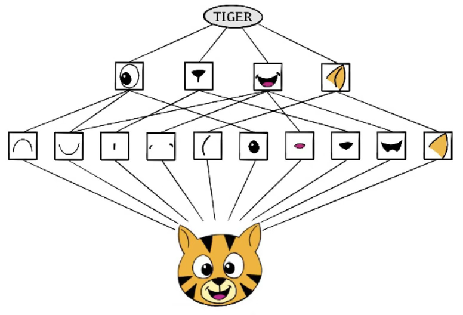

MLDL 딥러닝 분류 - 파트2
Chapter 2. 딥러닝 분류 (파트2)
1. 과신(Overconfidence)과 일반화 개선
딥러닝 분류 모델은 종종 ”정확도는 괜찮은데 확률이 지나치게 확신적”인 출력을 만든다. 예를 들어 틀린 예측인데도 p=0.99처럼 매우 높은 확률을 내놓는 경우가 있다.
이를 과신이라 부르며, 운영에서는 임계값 정책·리스크 관리·사후 검토량을 크게 왜곡시킨다. 따라서 분류 모델의 품질은 정답률뿐 아니라 확률의 신뢰도까지 함께 점검해야 한다.
(1) 딥러닝 확률의 과신 원인(softmax, 데이터 편향, OOD 등)
과신은 단일 원인이라기보다 ”확률 출력이 만들어지는 구조 + 데이터/학습 환경”이 결합된 결과로 보는 것이 정확하다.
Softmax 구조 자체가 만드는 경쟁과 ”확신”
다중분류에서 \(p_{k} = \frac{e^{z_{k}}}{\sum_{j = 1}^{K}e^{z_{j}}}\)이므로, 로짓 차이 \(z_{(1)} - z_{(2)}\)가 조금만 커져도 최대 확률은 급격히 1에 가까워진다. 즉 softmax는 ”최대 클래스가 승자독식”을 만드는 경향이 있어, 결정경계에서 조금 멀어지면 매우 큰 확신을 출력하기 쉽다.
또한 cross-entropy는 정답 클래스 확률 p_y를 크게 만들도록 압력을 주며, \(\mathcal{L} = - \log p_{y}\)이다. 이 손실은 \(p_{y} \rightarrow 1\)로 밀어붙이는 성격이 있어(특히 데이터가 쉽게 분리되거나 모델이 과대용량일 때) 과신이 강화될 수 있다.
데이터 편향과 라벨 노이즈
훈련 데이터가 현실 운영 분포를 충분히 대표하지 못하면(표본 편향), 모델은 ”보지 못한 경우”를 만나도 여전히 높은 확률을 낼 수 있다. 라벨 노이즈가 존재해도 cross-entropy는 틀린 라벨을 맞추려는 방향으로 강하게 학습되므로, 일부 영역에서 불필요한 확신이 쌓일 수 있다.
OOD(Out-of-Distribution) 입력
훈련 분포 밖 입력 \(x \sim P_{\text{OOD}}\)에 대해서도 softmax는 어떤 클래스로든 확률을 ”합이 1이 되게” 배분해야 한다. 이 때문에 ”모르는 입력”인데도 \(\max_{k}p_{k}(x)\)가 크게 나오는 현상이 흔하다. 즉 OOD에서의 과신은 softmax 기반 분류기의 구조적 취약점으로 자주 지적된다.
(2) Calibration curve / ECE / Brier score
확률의 신뢰도를 평가하는 핵심은 다음 질문이다. ”모델이 0.8이라고 말한 사례들은 실제로 약 80%가 맞는가?”
Calibration curve (Reliability diagram)
확률 예측 \({\widehat{p}}_{i}\)를 구간(bin)으로 나눈 뒤, 각 구간에서 평균 예측 확률은 \(conf(b)\). 실제 정확도(양성 비율 또는 정답률) \(acc(b)\)를 비교한다.
이진분류 예시(양성 확률): \(acc(b) = \frac{1}{|B_{b}|}\sum_{i \in B_{b}}y_{i},conf(b) = \frac{1}{|B_{b}|}\sum_{i \in B_{b}}{\widehat{p}}_{i}\)
완전 보정이면 \(acc(b) \approx conf(b)\)가 되어 대각선에 놓인다.
ECE (Expected Calibration Error)
ECE는 구간별 차이의 가중 평균이다. \(ECE = \overset{B}{\sum_{b = 1}}\frac{|B_{b}|}{n}|acc(b) - conf(b)|\)
작을수록 보정이 잘 되고 구간 개수 B 및 binning 방식에 민감할 수 있다(평가 세팅 명시 필요).
Brier score
Brier score는 ”확률 예측의 제곱오차”로, calibration과 sharpness(확률의 분별력)를 함께 반영한다.
이진분류: \(BS = \frac{1}{n}\overset{n}{\sum_{i = 1}}({\widehat{p}}_{i} - y_{i})^{2}\), 다중분류(원-핫 \(\mathbf{y}_{i}\), 확률 \(\mathbf{p}_{i}\)): \(BS = \frac{1}{n}\overset{n}{\sum_{i = 1}}\overset{K}{\sum_{k = 1}}(p_{ik} - y_{ik})^{2}\) 작을수록 좋다.
(3) 보정 방법: Temperature scaling / Platt / Isotonic
보정(calibration)은 보통 ”모델을 다시 학습”하기보다, 학습된 모델의 출력 점수(logit 또는 score)를 사후 변환하는 방식이 실무적으로 안정적이다. 핵심은 ”검증셋(또는 별도 calibration set)“을 사용해 변환 파라미터를 추정하는 것이다.
Temperature scaling (softmax logits 보정)
다중분류에서 로짓 \(\mathbf{z}\)에 대해 \(\mathbf{p}^{(T)} = softmax\left( \frac{\mathbf{z}}{T} \right),T > 0\)
- T>1: 로짓을 나눠 softmax를 ”평평하게” 만들어 과신을 완화
- T<1: 더 뾰족하게(과소신 보정일 때)
T는 보통 calibration set에서 NLL을 최소화하도록 하나의 스칼라로 추정한다. 장점은 순위(Top-1 클래스)는 거의 유지되며, 확률만 부드럽게 조정되어 운영 임계값 설계가 쉬워진다는 점이다.
Platt scaling (주로 이진분류, score → sigmoid)
SVM 등에서 유래했으며, 어떤 점수 s(x)에 대해 \(\widehat{p}(x) = \sigma(as(x) + b)\) 형태로 a, b를 calibration set에서 추정한다. 딥러닝에서도 로짓 z에 적용 가능하다.
Isotonic regression (비모수 단조 보정)
확률을 단조 함수 \(g( \cdot )\)로 보정한다. \(\widehat{p}(x) = g(s(x))\). 장점은 형태 가정이 약해 유연하다는 것이고 단점은 데이터가 적으면 과적합 위험이 커진다(특히 희귀 양성일 때).
실무적으로는 데이터가 충분하면 isotonic, 그렇지 않으 temperature/Platt처럼 파라미터 수가 적은 방법이 안전한 편이다.
(4) 일반화 개선 연결: 증강·전이학습·정규화가 과신에 미치는 영향
과신은 ”확률 출력부” 문제처럼 보이지만, 실제로는 일반화와 깊게 연결된다. 일반화가 좋아지면 보통 과신도 함께 완화되지만, 항상 자동으로 해결되지는 않기 때문에 ”학습 개선 + 사후 보정”을 함께 고려한다.
데이터 증강(augmentation)
증강은 입력 변형을 통해 모델이 더 넓은 데이터 다양성을 보게 만들어, 특정 패턴에 대한 과도한 확신을 줄이는 경향이 있다. 특히 강한 증강은 결정경계를 부드럽게 만들어 calibration이 개선되는 경우가 많다(다만 과도하면 정확도 자체가 손해 볼 수 있어 균형이 필요).
전이학습(transfer learning)
사전학습된 표현을 사용하면 적은 데이터에서도 과적합이 줄고, 결과적으로 과신이 완화될 수 있다. 반대로 도메인 차이가 큰데 억지로 가져오면 OOD에서 과신이 더 심해질 수도 있으므로, 도메인 적합성이 중요하다.
정규화(regularization): weight decay, dropout, label smoothing
정규화는 과도한 결정경계 ”날카로움”을 완화하는 역할을 한다.
- weight decay: \(\lambda \parallel \theta \parallel_{2}^{2}\)로 복잡도 억제
- dropout: 표현의 공적응을 줄여 과적합 완화
- label smoothing: \({\overset{˜}{y}}_{k} = (1 - \varepsilon)y_{k} + \frac{\varepsilon}{K}\)
정답을 약간 부드럽게 만들어 ”확률 1에 대한 강박”을 줄여 과신 완화에 직접적으로 도움이 되는 경우가 많다.
(5) Calibration 운영 체크리스트(4단계)
Calibration curve(신뢰도 다이어그램)로 ”과신/과소신”을 먼저 확인
모델이 출력한 확률 \hat p를 구간(bin)으로 나누고, 각 구간에서 평균 예측 확률(신뢰도) \(conf(b)\), 실제 정답 비율(정확도) \(acc(b)\)을 비교한다.
완전 보정이면 \(acc(b) \approx conf(b)\)가 되어 대각선 근처에 놓인다.
- 과신(overconfident): \(conf(b) > acc(b)\) (모델이 말한 확률이 실제보다 큼)
- 과소신(underconfident): \(conf(b) < acc(b)\)
이 단계는 ”지표 숫자”보다도, 어느 확률 구간에서 문제가 큰지(0.6~0.8? 0.9 이상?)를 보는 데 의미가 있다.
ECE / Brier score로 수치화해서 비교·추적한다.
ECE (Expected Calibration Error) 구간별 불일치의 가중평균 \(ECE = \overset{B}{\sum_{b = 1}}\frac{|B_{b}|}{n}|acc(b) - conf(b)|\)이다. 값이 작을수록 calibration이 좋거 모델/학습법/버전 비교, ”보정 전후 개선” 확인에 유용하다.
Brier score 이진분류 기준 확률 제곱오차은 \(BS = \frac{1}{n}\overset{n}{\sum_{i = 1}}({\widehat{p}}_{i} - y_{i})^{2}\)이다. 값이 작을수록 좋고 calibration과 함께 확률의 품질을 포괄적으로 반영한다.
ECE + Brier를 함께 기록해 ”확률 품질이 시간에 따라 악화되는지”까지 모니터링한다.
Temperature scaling으로 확률을 보정한다(모델은 고정)
다중분류에서 로짓 \(\mathbf{z}\)가 있을 때, softmax 앞에 온도 T>0를 둔다. \(\mathbf{p}^{(T)} = softmax\left( \frac{\mathbf{z}}{T} \right)\)
- 보통 과신이면 T>1로 확률을 평평하게 만들어 과신을 완화한다.
- T는 검증용 calibration set에서 NLL(=CE)을 최소화하도록 추정한다. \(T^{*} = \arg\min_{T}\overset{n}{\sum_{i = 1}}( - \log p_{i,y_{i}}^{(T)})\)
장점은 모델 재학습 없이 ”출력 확률만” 수정하고 분류 순위(Top-1)는 거의 유지되면서 확률만 현실적으로 조정된다.
보정 후에 다시 위의 작업을 반복해 calibration curve가 개선되고 ECE/Brier가 내려가는지 확인한다.
보정된 확률로 임계값(Threshold)을 재튜닝한다.
보정 전에는 \(\widehat{p}\)였고, 보정 후에는 \hat p^{(T)}이므로 운영 결정도 이를 기준으로 다시 설정해야 한다.
이진분류 기준은 \(\widehat{y} = 1\{{\widehat{p}}^{(T)} \geq t\}\)이다. 임계값 t는 검증셋에서 아래 중 운영 목적에 맞는 규칙으로 선택한다.
- F1 최적화: \(t = \arg\max_{t}F1(t)\)
- 제약 기반: \(FPR(t) \leq \alpha\) 또는 검토량 \le K를 만족하는 t
- 비용 기반(가능하면): \(t^{*} = \frac{c_{FP}}{c_{FP} + c_{FN}}\) (확률이 잘 보정되어 있을수록 의미가 커짐)
2. 대규모 클래스 분류(Large K)의 계산 이슈
클래스 수 K가 수만~수백만으로 커지는 문제(예: 상품/문서/광고 ID 예측, 추천, 검색 쿼리-문서 매칭)에서는 ”모델이 무엇을 학습하느냐”보다 softmax를 어떻게 계산하느냐가 학습·추론의 병목이 된다.
핵심은 한 번의 학습 스텝에서 필요한 계산이 기본적으로 O(K)로 커지기 때문이다. 따라서 Large-K 분류는 (i) softmax 근사, (ii) 샘플링 기반 학습, (iii) 검색(retrieval) 기반 2-stage 구조로 실무 해법이 갈린다.
(1) softmax 계산 병목과 메모리 이슈
다중분류에서 로짓 \(\mathbf{z} \in \mathbb{R}^{K}\)에 대해 \(p_{k} = \frac{e^{z_{k}}}{\sum_{j = 1}^{K}e^{z_{j}}}\)를 계산하려면 분모 \(\sum_{j = 1}^{K}e^{z_{j}}\)가 필요하므로, 모든 클래스 로짓을 한 번은 계산해야 한다. 여기서 병목이 두 가지로 나타난다.
시간 복잡도: O(K) softmax + loss
정답이 y일 때 cross-entropy는 \(\mathcal{L} = - \log p_{y} = - z_{y} + \log\overset{K}{\sum_{j = 1}}e^{z_{j}}\) 이므로 \(\log\overset{K}{\sum_{j = 1}}e^{z_{j}}\) 계산이 곧 비용이다. K가 크면 한 배치에서 이 항을 계산하는 비용이 압도적이 된다.
출력층 파라미터의 메모리: O(Kd)
마지막 선형층이 보통 \(z_{k} = \mathbf{w}_{k}^{\top}\mathbf{h} + b_{k}\) (\(\mathbf{h} \in \mathbb{R}^{d}\): 마지막 은닉표현) 형태이므로, 출력층 가중치 \(W \in \mathbb{R}^{K \times d}\)를 저장해야 한다. 즉 파라미터 수가 \(Kd(\text{+}K\text{bias})\)로 증가한다. K가 수백만이면 이 층만으로도 GPU 메모리가 한계에 부딪히며, 분산 학습/샤딩이 필요해진다.
(2) sampled softmax / negative sampling 개념
Large-K에서 대표적 아이디어는 ”정답 클래스 1개 + 일부 음성 클래스만”을 사용해 학습 신호를 만들고, 전체 K에 대한 softmax 계산을 피하는 것이다.
Sampled Softmax (근사된 분모)
기본 CE는 분모가 전체 K를 요구한다. Sampled softmax는 각 샘플마다 정답 클래스 y, 음성 샘플 집합 \(S \subset \{ 1,\ldots,K\} \smallsetminus \{ y\},|S| = m \ll K\)만 뽑아서 ”부분 softmax”로 근사한다.
개념적으로는 \(\log\overset{K}{\sum_{j = 1}}e^{z_{j}} \approx \log(e^{z_{y}} + \sum_{j \in S}e^{z_{j}})\)를 사용한다. 실제로는 샘플링 분포에 따른 보정항을 넣어 편향을 줄이는 변형들이 많다.
학습 시 클래스 연산이 K에서 m으로 감소 → 비용이 O(m). 단, 근사이므로 샘플링 전략과 보정 방식이 품질에 영향을 준다.
Negative Sampling (대조 학습/랭킹 관점)
negative sampling은 ”정답 vs 음성”을 이진 분류(또는 랭킹) 문제로 바꾸는 관점이 강하다. 예를 들어 점수 \(s(x,k) = z_{k}\)에 대해, 정답 쌍 (x,y)는 양성, \((x,j)\)는 음성으로 두고 \(\mathcal{L} = - \log\sigma(s(x,y)) - \sum_{j \in S}\log\sigma( - s(x,j))\) 같은 형태의 손실을 쓴다. 이는 ”정답의 점수는 크게, 샘플된 음성들의 점수는 작게” 만들도록 학습한다.
negative sampling은 softmax 분모를 직접 근사하기보다, 순위(ranking) 품질을 직접 최적화 하는 느낌이 강하며, 추천/검색에서 특히 자주 쓰인다.
샘플링의 핵심: 음성을 어떻게 뽑을 것인가?
무작위 음성은 너무 쉽고 학습 신호가 약할 수 있다. 그래서 자주 쓰는 전략은 빈도 기반(자주 나오는 클래스에 더 많이), 모델 기반 hard negative(현재 모델이 헷갈리는 클래스), in-batch negative(같은 배치의 다른 정답들을 음성으로 활용)등이다. Large-K에서 성능 차이는 종종 ”모델 구조”보다 ”negative 구성”에서 크게 난다.
(3) retrieval + rerank(근사/2-stage) 관점
Large-K 문제를 ”분류”로만 보면 softmax가 병목이지만, 관점을 바꾸면 본질은 종종 Top-N 후보를 잘 찾는 문제다. 즉 전체 클래스 중 ”상위 몇 개”만 정확하면 되는 경우가 많다. 이때 표준 해법이 2-stage 구조다.
Stage 1: Retrieval (후보 생성)
입력 x를 임베딩 \(\mathbf{h}(x) \in \mathbb{R}^{d}\)로 만들고, 클래스(또는 아이템)도 임베딩 \(\mathbf{e}_{k} \in \mathbb{R}^{d}\)로 두어 유사도로 후보를 찾는다. \(\text{score}(x,k) = \mathbf{h}(x)^{\top}\mathbf{e}_{k}\)
그 다음 ANN(Approximate Nearest Neighbor) 같은 근사 최근접 탐색으로 Top-N 후보를 빠르게 가져온다. 이 단계는 ”정확도”보다 ”빠르게 후보를 넓게 회수(recall)“하는 것이 목적이다.
Stage 2: Rerank (정밀 재정렬)
1단계 후보 N개(예: 100~1000개)만 놓고, 더 무거운 모델(딥 네트워크, cross-attention 등)로 정교하게 점수화하여 최종 Top-k를 결정한다. \(\widehat{y} \in \text{Top-}k\text{of}\{\text{rerank\_score}(x,c):c \in \mathcal{C}_{N}\}\)
왜 2-stage가 강력한가?
전체 K에 대해 매번 계산하지 않아도 됨 → 추론 비용 대폭 감소하고, 모델링이 ”정규화된 확률”이 아니라 ”랭킹” 중심으로 최적화되기 수빈다. 검색/추천 시스템의 운영 요구(Top-k 응답, 지연시간 제한)에 자연스럽게 맞다.
Large-K에서는 ”확률의 정확한 정규화”보다 ”상위 후보를 얼마나 잘/빠르게 찾는가”가 더 중요해져, 분류가 검색(retrieval) 문제로 재정식화되는 경우가 많다.
(4) 무엇을 언제 쓰나?
Large-K 분류에서 핵심 선택지는 ”끝까지 분류(softmax 계열)로 갈 것인가” vs ”문제를 검색로 재정식화할 것인가”이다
Sampled softmax / negative sampling을 우선 고려하는 경우
(A) 목표가 ’정규화된 확률’에 가깝다
다음 토큰 확률(언어모델류), 확률 자체가 다운스트림에 들어가는 경우 softmax는 \(\sum_{k}p_{k} = 1\)인 확률분포를 제공한다.
샘플링은 학습에서만 근사를 쓰되, 추론에서는 필요에 따라 Top-k만 계산하는 방식으로 절충할 수 있다.
(B) 학습은 대규모지만 서빙은 상대적으로 단순/오프라인이다
배치로 추천 후보를 미리 생성하거나, 하루/시간 단위로 점수 산출하는 경우 학습을 샘플링으로 가볍게 만들고, 추론은 충분한 자원으로 처리 가능하다.
(C) ”라벨이 명확한 1-of-K” 구조가 강하다
카테고리/클래스가 고정되어 있고 정답이 하나인 폐집합(closed-set) 분류의 경우 sampled softmax는 기본 CE 학습 프레임을 유지하므로 기존 분류 파이프라인과 잘 맞는다.
(D) 평가/목표가 Top-1 정확도 중심
CE 기반 학습은 top-1 분류 성격과 결이 잘 맞는다.
확률모형을 유지하고 싶은 경우 또는 분류 파이프라인을 크게 바꾸기 어려운 경우에 sampled softmax/negative sampling이 현실적이다.
Retrieval + Rerank(2-stage)를 우선 고려하는 경우
(A) 목표가 Top-k 추천/검색이며, 전체 확률이 필요 없다
검색 결과 상위 10개, 추천 상위 50개의 경우 운영 목적이 ”확률의 정규화”가 아니라 ”상위 후보를 잘 맞추기”라면 2-stage가 자연스럽다.
(B) 초저지연/대규모 서빙이 필수다
온라인 추천/검색에서 ms 단위 지연 제한의 경우 전체 K 스코어링은 불가능에 가깝고, ANN 기반 retrieval로 후보를 줄이는 게 정답에 가깝다.
(C) 클래스(아이템)가 자주 추가/삭제되는 동적 카탈로그
신규 상품/콘텐츠가 계속 들어오는 서비스의 경우 ”분류의 출력층 테이블(K\times d)“을 계속 재학습/동기화하기 어렵다. 임베딩 인덱스 기반 retrieval은 추가/갱신이 비교적 수월하다.
(D) hard negative를 잘 만들고 싶다 / 랭킹 지표가 중요하다
NDCG, MAP, Recall@k 중심의 경우 2-stage는 1단계가 ”회수(recall)“, 2단계가 ”정밀도(precision)”를 담당해 랭킹 지표 최적화에 유리하다.
문제의 본질이 ’찾기’(search/recommend)라면, 분류로 억지로 풀기보다 retrieval+rerank가 운영/성능/지연 모두에서 이점이 크다.
Negative sampling은 ”분류”라기보다 ”랭킹”에 가깝게 쓰는 경우가 많다.
sampled softmax: CE를 유지하되 분모 계산을 샘플로 근사(분류 프레임 유지)
negative sampling: (x,y)를 양성, (x,j)를 음성으로 두고 ”정답 점수↑, 음성 점수↓“를 학습 \(- \log\sigma(s(x,y)) - \sum_{j \in S}\log\sigma( - s(x,j))\) → 운영 목표가 Top-k이면 특히 잘 맞는다.
즉, ”확률이 필요한가?“가 갈림길이다. 확률이 꼭 필요하면 sampled softmax 쪽, Top-k 품질이 핵심이면 negative sampling/2-stage 쪽으로 기운다.
최종 의사결정 체크리스트
1. 출력이 확률분포(\(\sum p_{k} = 1\))로 꼭 필요? Yes → sampled softmax(또는 계층 softmax 등) 우선, No → retrieval+rerank 우선
2. 서빙 지연 제한이 빡빡하고 K가 매우 큼? Yes → 2-stage(ANN retrieval 필수)
3. 아이템/클래스가 자주 변하는 카탈로그? Yes → 2-stage가 유지보수에 유리
4. 목표 지표가 accuracy보다 Recall@k / NDCG / MAP? Yes → 랭킹 관점(negative sampling + 2-stage)로 설계
3. 거리학습 기반 분류: Metric Learning
Large-K나 오픈셋(open-set) 환경에서는 ”클래스마다 하나의 고정 출력 뉴런”을 두는 방식이 비효율적이거나 불가능해진다. 이때 분류를 임베딩 공간의 거리(유사도) 문제로 바꾸는 접근이 유용하며, 이를 거리학습(metric learning)이라 한다.
핵심 아이디어는 입력 x를 임베딩 \(f_{\theta}(x) \in \mathbb{R}^{d}\)로 보내고, 같은 클래스는 가깝게, 다른 클래스는 멀게 배치하여 ”가까운 것이 정답”이 되도록 학습하는 것이다.
(1) 임베딩과 유사도 기반 분류(최근접/프로토타입)
임베딩 표현
신경망은 입력을 d차원 임베딩으로 변환한다. \(\mathbf{h} = f_{\theta}(x) \in \mathbb{R}^{d}\)
거리학습에서는 분류기의 마지막 softmax 대신, 임베딩 간 거리 또는 유사도로 판단한다. 자주 쓰는 선택은 유클리드 거리 \(\parallel \mathbf{h} - \mathbf{c} \parallel_{2}\), 코사인 유사도 \(\cos(\mathbf{h},\mathbf{c}) = \frac{\mathbf{h}^{\top}\mathbf{c}}{\parallel \mathbf{h} \parallel \parallel \mathbf{c} \parallel}\)이다.
최근접(Nearest Neighbor) 분류
각 클래스의 대표(또는 학습 샘플) 임베딩 \(\{\mathbf{c}_{k}\}\)가 있을 때 \(\widehat{y} = \arg\min_{k}d(\mathbf{h},\mathbf{c}_{k})\) 또는 \(\arg\max_{k}s(\mathbf{h},\mathbf{c}_{k}))\)로 예측한다. 여기서 d는 거리, s는 유사도다.
이 방식은 ”출력층이 K개”일 필요가 없어, 클래스가 커지거나 새 클래스를 추가할 때도 유연하다(임베딩만 추가하면 됨).
프로토타입(Prototype) 기반 분류
각 클래스 k에 대해 support set(대표 샘플) 임베딩의 평균을 프로토타입으로 둔다. \(\mathbf{c}_{k} = \frac{1}{|S_{k}|}\sum_{x_{i} \in S_{k}}f_{\theta}(x_{i})\) 그리고 \(\widehat{y} = \arg\min_{k} \parallel \mathbf{h} - \mathbf{c}_{k} \parallel_{2}\)처럼 분류한다. few-shot에서 특히 자연스럽고, ”클래스 내 변동을 평균으로 흡수”하는 장점이 있다.
metric learning 분류는 ”확률 분포를 직접 출력”하기보다 ”임베딩 공간에서 가까운 클래스가 정답”이라는 규칙을 학습한다.
(2) contrastive / triplet loss
임베딩 공간을 원하는 모양으로 만들려면, ”어떤 쌍/삼쌍은 가깝게, 어떤 것은 멀게”라는 학습 신호가 필요하다. 대표 손실이 contrastive loss와 triplet loss다.
Contrastive loss (쌍(pair) 기반)
두 샘플 \((x_{i},x_{j})\)에 대해 같은 클래스면 \(y_{ij} = 1\), 다르면 \(y_{ij} = 0\)이라 두고, \(D_{ij} = \parallel f_{\theta}(x_{i}) - f_{\theta}(x_{j}) \parallel_{2}\)라고 하자. 전형적 형태는 \(\mathcal{L} = y_{ij}D_{ij}^{2} + (1 - y_{ij})\lbrack\max(0,m - D_{ij})\rbrack^{2}\)이다.
같은 클래스 \((y_{ij} = 1)\)의 경우 거리를 0에 가깝게 줄이도록 학습하고 다른 클래스 \((y_{ij} = 0)\)는 거리 \(D_{ij}\)가 margin m보다 작으면 벌점 → 최소 m 이상 벌어지게 된다.
핵심은 ”음성 쌍은 일정 거리 이상이면 더 밀 필요가 없다”는 margin 개념이다.
Triplet loss (삼쌍(triplet) 기반)
anchor a, positive p(같은 클래스), negative n(다른 클래스)을 구성한다. \(D(a,p) = \parallel f(a) - f(p) \parallel_{2},D(a,n) = \parallel f(a) - f(n) \parallel_{2}\)
목표는 \(D(a,p) + \alpha \leq D(a,n)\)가 되게 만드는 것이며, 손실은 \(\mathcal{L} = \max(0,D(a,p) - D(a,n) + \alpha)\)로 쓴다(\(\alpha\): margin).
triplet loss의 성패는 negative를 어떻게 고르느냐(hard / semi-hard negative mining)에 크게 달려 있다. 너무 쉬운 negative는 학습 신호가 약하고, 너무 어려운 negative(노이즈/오표기 포함)는 불안정해질 수 있다.
contrastive는 ”쌍을 맞추는 문제”, triplet은 ”순위(가까움의 상대 비교)를 맞추는 문제”에 가깝다.
(3) few-shot, 오픈셋과 연결
Few-shot 학습과의 연결
few-shot은 클래스당 샘플이 매우 적은 상황이다. 일반 softmax 분류는 클래스별 파라미터를 충분히 학습하기 어렵지만, metric learning은 ”임베딩 공간의 일반화”가 핵심이므로 적은 샘플로도 분류 규칙을 만들 수 있다.
프로토타입 방식은 특히 few-shot에서 강력하다. support set으로 \(\mathbf{c}_{k}\)를 만든 뒤 최근접 분류로 끝나기 때문이다. 새로운 클래스가 와도 ”프로토타입만 계산”하면 바로 동작한다.
오픈셋(open-set)과 OOD 탐지
오픈셋에서는 ”학습에 없던 클래스”가 들어올 수 있다. softmax는 항상 \(\sum_{k}p_{k} = 1\)이므로 무엇이든 기존 클래스 중 하나로 강제 분류하는 경향이 있어 과신 문제가 생긴다.
반면 metric learning은 ”가까운 클래스가 없으면 거리가 멀다”는 신호를 이용해 거절(reject) 규칙을 만들기 쉽다.
예를 들면, 최소 거리 기반 거절 \(\min_{k}d(\mathbf{h},\mathbf{c}_{k}) > \tau \Rightarrow \text{unknown}\)또는 유사도가 일정 이하이면 unknown 처리한다.
2-stage(retrieval+rerank)와의 연결
metric learning은 retrieval 단계와 궁합이 좋다. 임베딩을 만들고 ANN으로 후보를 회수한 뒤, rerank 모델로 정밀 점수화를 하는 구조는 8장에서 본 2-stage와 자연스럽게 연결된다. 즉 Large-K 문제에서 metric learning은 ”분류를 검색으로 바꾸는” 핵심 도구로도 쓰인다.
(4) 무엇을 언제 쓰나? (Softmax 분류 vs Metric Learning 선택 기준)
둘 다 ”분류”지만 전제가 다릅니다. softmax 분류는 폐집합(closed-set), metric learning은 확장/검색/오픈셋에 강합니다. 아래 체크리스트로 고르면 됩니다.
Softmax(+CE)를 우선 선택하는 경우
클래스가 고정되고(폐집합), 학습/운영에서 동일한 클래스 집합을 쓴다. \(\Rightarrow\) ”정답은 K 중 하나”가 확실한 전형적 분류이다.
확률 \(P(Y = k \mid x)\) 자체가 필요하다(리스크 스코어링, 비용기반 의사결정, calibration 운영 등). \(\Rightarrow \sum_{k}p_{k} = 1\)인 확률분포가 자연스럽다.
클래스당 데이터가 충분하고, 클래스 내 변동을 모델이 직접 학습할 수 있다. \(\Rightarrow\) 출력층 파라미터가 안정적으로 추정된다.
목표가 Top-1 정확도 중심이며, ”거절(unknown)“이 운영 요구가 아니다.
Metric Learning을 우선 선택하는 경우
새 클래스가 자주 추가/변경되거나, 학습 시점에 모든 클래스를 다 보지 못한다. \(\Rightarrow\) softmax 출력층(\(K \times d\))을 계속 재학습하기 어렵다.
few-shot(클래스당 샘플이 매우 적음)에서 ”빠르게 적응”해야 한다. \(\Rightarrow\) 프로토타입 \(\mathbf{c}_k= \frac{1}{\|S_k\|}\\sum f(x)\) + 최근접 분류가 강력하다.
오픈셋/unknown 거절이 중요하다. \(\Rightarrow\) \(\min_{k}d(\mathbf{h},\mathbf{c}_{k}) > \tau\) 같은 규칙으로 자연스럽게 거절 가능하다.
검색/추천/유사도 질의(retrieval)가 문제의 본질이다(Top-k, 랭킹 지표 중심). \(\Rightarrow\) 임베딩 + ANN + rerank(2-stage)로 확장성이 좋다.
실무 결론
폐집합 분류 + 확률 필요: softmax(+CE)로 가고, calibration/threshold 정책까지 함께 설계
대규모/동적/검색형 문제: metric learning으로 임베딩을 만들고 retrieval+rerank로 운영
하이브리드도 흔함: 임베딩 기반 retrieval로 후보를 줄이고 후보에 대해 softmax(또는 pairwise scoring)로 rerank/확률화
4. 자기지도/대조학습 후 분류기(현대적 파이프라인)
현대 딥러닝 분류는 ”처음부터 끝까지 supervised 학습”만으로 설명되기 어렵다. 특히 이미지·텍스트 모두에서 (i) 강한 데이터 증강, (ii) 사전학습(pretraining), (iii) 전이학습(transfer learning)이 표준 파이프라인이 되었고, 분류기는 종종 ”잘 학습된 표현(representation) 위에 얹는 얕은(head)” 형태로 구현된다.
여기에서는 CNN 기반 이미지 분류의 기본 구조를 정리하고, 증강과 전이학습이 왜 일반화와 calibration에까지 영향을 주는지, 그리고 문서 분류에서의 전형적 파이프라인을 함께 연결한다.
(1) CNN(합성곱) 기반 딥러닝 분류
신경망은 2010년 무렵 이미지 분류에서 큰 성공을 거두면서 다시 주목받기 시작했다. 그 당시에는 라벨이 붙은 이미지로 이루어진 대규모 데이터베이스가 빠르게 축적되고 있었고, 클래스 수도 계속 증가하고 있었다.
다음 그림은 CIFAR100 데이터베이스에서 뽑은 75장의 이미지를 보여준다. 이 데이터베이스는 20개의 상위 범주(예: 수생 포유류)로 구분된 60,000장의 이미지로 구성되며, 각 상위 범주마다 5개의 클래스(예: 비버, 돌고래, 수달, 물개, 고래)가 있다.

각 이미지는 32×32 픽셀의 해상도를 가지며, 각 픽셀은 빨강(red), 초록(green), 파랑(blue)을 나타내는 8비트 숫자 3개로 표현된다. 각 이미지의 숫자들은 특징맵(feature map)이라 불리는 3차원 배열로 정리된다. 앞의 두 축은 공간 축(둘 다 길이 32)이고, 세 번째 축은 세 가지 색을 나타내는 채널(channel) 축이다. 학습용(training) 세트는 50,000장, 테스트(test) 세트는 10,000장으로 지정되어 있다.
이러한 이미지들을 분류하기 위해 합성곱 신경망(CNN)이라는 특수한 신경망 계열이 발전해 왔으며, 매우 다양한 문제에서 뛰어난 성과를 보여 왔다. CNN은 이미지 속 어디에서든 특정 특징이나 패턴을 인식함으로써, 어느 정도는 인간이 이미지를 분류하는 방식과 유사하게 작동한다.
이미지 분류에서 CNN은 ”공간적 구조를 활용해 특징을 계층적으로 추출”하는 대표 모델이다. 입력 \(X \in \mathbb{R}^{H \times W \times C}\)에 대해, CNN은 국소 영역을 공유 가중치로 스캔하며(feature sharing) 특징맵(feature map)을 만든다. 이는 완전연결(FC)보다 파라미터 효율이 높고, 위치 변화에 더 강건한 표현을 학습하게 한다.
Convolutional Layers (합성곱 층)
합성곱 층은 많은 수의 합성곱 필터로 구성된다. 각 필터는 이미지 안에 특정한 국소 특징이 존재하는지를 판별하는 템플릿 역할을 한다. 합성곱 필터는 합성곱이라 불리는 매우 단순한 연산에 기반하며, 이는 기본적으로 행렬 원소들을 반복적으로 곱한 뒤 그 결과를 더하는 작업으로 이루어진다.
합성곱 필터가 어떻게 작동하는지 이해하기 위해, 아주 단순한 \(2 \times 3\)이미지 예를 생각해보자.
\(\text{Original Image} = \begin{bmatrix} a & b & c \\ d & e & f \\ g & h & i \\ j & k & l \end{bmatrix}\). 다음의 \(2 \times 2\) 필터 \(\text{Convolution Filter} = \begin{bmatrix} \alpha & \beta \\ \gamma & \delta \end{bmatrix}\)로 이미지를 합성곱하면 다음 결과를 얻는다. 예를 들어, 왼쪽 위 원소는 \(2 \times 2\) 필터의 각 원소를 이미지의 왼쪽 위 \(2 \times 2\) 부분과 대응시키며 곱한 뒤 그 결과를 합하여 얻는다. 다른 원소들도 동일한 방식으로 얻어진다.
\[\text{Convolved Image} = \begin{bmatrix} a\alpha + b\beta + d\gamma + e\delta & b\alpha + c\beta + e\gamma + f\delta \\ d\alpha + e\beta + g\gamma + h\delta & e\alpha + f\beta + h\gamma + i\delta \\ g\alpha + h\beta + j\gamma + k\delta & h\alpha + i\beta + k\gamma + l\delta \end{bmatrix}\]
즉, 합성곱 필터를 원본 이미지의 모든 \(2 \times 2\) 부분행렬에 적용함으로써 합성곱된 이미지를 만든다. 원본 이미지의 어떤 \(2 \times 2\) 부분행렬이 합성곱 필터와 비슷하다면, 합성곱된 이미지에서 해당 위치의 값은 크게 나타나고, 그렇지 않다면 작게 나타난다.
따라서 합성곱된 이미지는 원본 이미지에서 합성곱 필터와 유사한 영역을 강조(highlight)한다. 여기서는 \(2 \times 2\)를 예로 들었지만, 일반적으로 합성곱 필터는 \(\ell_{1} \times \ell_{2}\) 크기의 작은 배열이며, \(\ell_{1},\ell_{2}\) 는 (반드시 같을 필요는 없는) 작은 양의 정수이다.
다음 그림은 왼쪽에 있는 \(192 \times 179\) 크기의 호랑이 이미지에 두 개의 합성곱 필터를 적용하는 예를 보여준다. 각 합성곱 필터는 \(15 \times 15\) 크기의 이미지로, 대부분은 0(검정)이며 이미지 안에서 세로 또는 가로 방향으로 놓인 1(흰색)의 좁은 띠를 포함한다. 각 필터를 호랑이 이미지에 합성곱하면, 필터와 유사한(즉 세로/가로 줄무늬나 에지를 가진) 영역에는 큰 값이 부여되고, 해당 특징과 닮지 않은 영역에는 작은 값이 부여된다.

합성곱 필터는 에지(edge)나 작은 모양처럼 이미지의 국소 특징을 찾아낸다. 왼쪽의 호랑이 이미지에 가운데의 두 개 작은 합성곱 필터를 적용한다. 합성곱된 이미지는 원본 이미지에서 필터와 비슷한 세부 구조가 발견되는 영역을 강조한다.
구체적으로 위쪽 합성곱 결과는 호랑이의 세로 줄무늬를 강조하고, 아래쪽 합성곱 결과는 가로 줄무늬를 강조한다. 원본 이미지를 합성곱 신경망의 입력층으로, 합성곱된 이미지들을 첫 번째 은닉층의 유닛들로 생각할 수 있다.
합성곱 층에서는 서로 다른 방향의 에지와 형태를 다양하게 골라내기 위해 필터들의 전체 집합(bank)을 사용한다. 이러한 방식으로 미리 정의된 필터를 쓰는 것은 전통적인 이미지 처리에서 표준적 관행이다.
반면 CNN에서는 필터가 특정 분류 과제를 위해 학습된다. 필터의 가중치는 입력층에서 은닉층으로 가는 모수로 생각할 수 있는데, 합성곱된 이미지의 각 픽셀마다 하나의 은닉 유닛이 대응된다고 보면 된다.
실제로도 그렇지만, 이 모수들은 매우 구조화되고 제약된 형태를 가진다. 즉 입력 이미지의 국소 패치에만 작동하므로 구조적으로 0인 부분이 많고, 하나의 필터 안에서 같은 가중치가 이미지의 모든 가능한 위치에 재사용되므로(가중치가 공유되므로) 가중치가 제약된다.
입력 이미지가 컬러이므로, 3차원 특징맵(배열)로 표현되는 세 개의 채널을 가진다. 각 채널은 \(32 \times 32\)의 2차원 특징맵이며, 각각 빨강(red), 초록(green), 파랑(blue)에 해당한다.
하나의 합성곱 필터도 마찬가지로 색상별로 하나씩, 총 세 개의 채널을 가지며, 각 채널은 \(3 \times 3\) 크기이고 채널마다 필터 가중치가 달라질 수 있다.
이 세 번의 합성곱 결과를 합산하여 하나의 2차원 출력 특징맵을 만든다. 이 시점에서는 색상 정보가 이미 사용되었고, 이후 층으로는(합성곱에서의 역할을 제외하면) 별도로 전달되지 않는다.
첫 번째 은닉층에서 서로 다른 합성곱 필터를 K개 사용하면, K개의 2차원 출력 특징맵을 얻게 된다. 이들은 함께 하나의 3차원 특징맵으로 취급된다.
우리는 K개의 출력 특징맵 각각을 서로 다른 정보 채널로 보며, 따라서 원래 입력 특징맵의 3개 색상 채널과 대비되어 이제는 K개의 채널을 갖게 된다. 이 3차원 특징맵은 단순 신경망 은닉층의 활성값(activations)과 유사하지만, 공간적으로 구조화된 방식으로 정리되고 생성된다는 점이 다르다.
보통 합성곱된 이미지에 ReLU 활성함수를 적용한다. 이 단계는 때로 CNN의 별도 층으로 간주되며, 그런 경우 detector layer(검출기 층)라고 부르기도 한다.
Pooling Layers
풀링 층(pooling layer)은 큰 이미지를 더 작은 요약 이미지로 압축(condense)하는 방법을 제공한다. 풀링에는 여러 방식이 가능하지만, 맥스 풀링(max pooling)은 이미지의 겹치지 않는 각 \(2 \times 2\) 블록을 그 블록 안의 최댓값으로 요약한다.
이 연산은 이미지의 크기를 각 방향에서 2배씩 줄이며(즉 가로/세로 모두 절반), 동시에 어느 정도의 위치 불변성(location invariance)을 제공한다. 즉 블록 안의 4개 픽셀 중 하나라도 큰 값이 있으면, 축소된 이미지에서는 그 블록 전체가 큰 값으로 기록된다.
맥스 풀링의 간단한 예는 다음과 같다.
\[\text{Max pool}\begin{bmatrix} 1 & 2 & 5 & 3 \\ 3 & 0 & 1 & 2 \\ 2 & 1 & 3 & 4 \\ 1 & 1 & 2 & 0 \end{bmatrix} \rightarrow \begin{bmatrix} 3 & 5 \\ 2 & 4 \end{bmatrix}\]
CNN Architecture
지금까지 우리는 하나의 합성곱 층을 정의했다. 각 필터는 새로운 2차원 특징맵 하나를 만든다. 합성곱 층에서 필터의 개수는, 완전연결 신경망에서 특정 은닉층의 유닛 수와 유사한 역할을 한다.
이 수는 또한 결과로 생성되는 3차원 특징맵의 채널 수를 결정한다. 또한 풀링 층은 각 3차원 특징맵의 앞 두 차원(공간 차원)을 줄인다는 것을 설명했다. 깊은 CNN은 이러한 층을 많이 쌓는다.
다음 그림은 CIFAR100 이미지 분류 과제를 위한 CNN의 전형적인 구조를 보여준다. CIFAR100 분류 과제를 위한 깊은 CNN의 아키텍처. 합성곱 층들 사이에 \(2 \times 2\) 맥스풀 층이 끼워져 있으며, 맥스풀은 두 공간 차원 모두에서 크기를 2배씩 줄인다.

입력층에서는 컬러 이미지의 3차원 특징맵을 보게 되는데, 여기서 채널 축은 각 색을 \(32 \times 32\)의 2차원 픽셀 특징맵으로 나타낸다.
첫 번째 은닉층에서 각 합성곱 필터는 새로운 채널을 하나씩 만들어내며, 각각은(가장자리에 패딩을 약간 준 뒤) \(32 \times 32\) 특징맵이 된다.
첫 번째 합성곱을 마치면 우리는 새로운 ”이미지”, 즉 입력의 3개 색상 채널보다 훨씬 많은 채널을 가진 특징맵을 얻게 된다(그림에서는 합성곱 필터를 6개 사용했기 때문에 채널이 6개).
그 다음에는 맥스풀 층이 이어지며, 이는 각 채널의 특징맵 크기를 4분의 1로 줄인다(각 방향에서 2배씩 줄어드는 것과 같다). 이런 ”합성곱→풀링” 순서는 다음 두 층에서도 반복된다.
세부 사항은 다음과 같다. 이후의 각 합성곱 층은 첫 번째 층과 유사하다. 이전 층의 3차원 특징맵을 입력으로 받아 이를 하나의 다채널 이미지처럼 취급한다. 학습되는 각 합성곱 필터는 이 특징맵과 동일한 수의 채널을 가진다.
풀링 층을 거치면 채널 특징맵의 공간 크기가 줄어드므로, 보통 이를 보상하기 위해 다음 합성곱 층에서 필터 수를 늘린다.
때로는 풀링 층을 넣기 전에 합성곱 층을 여러 번 반복한다. 이는 사실상 필터의 차원을(표현력을) 증가시키는 효과가 있다.
이 연산들은 풀링을 통해 각 채널 특징맵이 각 차원에서 몇 픽셀만 남을 때까지 반복된다. 이 시점에서 3차원 특징맵은 flatten되어(픽셀을 개별 유닛으로 취급) 하나 이상의 완전연결 층으로 들어가며, 최종적으로 출력층에 도달한다. 출력층은 100개 클래스에 대한 softmax 활성함수를 사용한다.
이런 네트워크를 구성할 때는 각 층의 개수·종류·크기 외에도 선택해야 할 튜닝 파라미터가 많다. 드롭아웃(dropout)은 각 층에서 사용할 수 있고, 라쏘(lasso)나 릿지(ridge) 정규화도 사용할 수 있다. 합성곱 신경망을 구성하는 세부 사항은 부담스럽게 느껴질 수 있다.
다음 그림은 데이터 증강(data augmentation)으로 원본 이미지(가장 왼쪽)를 자연스러운 방식으로 왜곡하여 같은 클래스 레이블을 갖는 서로 다른 이미지를 만든다. 이러한 왜곡은 사람을 속이지 않으며, CNN을 적합할 때 정규화(regularization)의 한 형태로 작동한다.

(2) Data Augmentation
데이터 증강은 ”라벨을 유지하는 변환으로 학습 데이터를 확장”하여 일반화 성능을 높이는 핵심 기법이다. 증강은 단순히 데이터 수를 늘리는 것 이상으로, 모델에게 불변성(invariance) 또는 평활한 결정경계를 학습시키는 역할을 한다.
기본 증강(flip/crop/rotate/color jitter)
- flip: 좌우 반전 (대칭성이 있는 문제에서 유효)
- random crop / resize: 위치/스케일 변화에 강건
- rotate: 회전 불변성이 있는 경우 유효(과도한 회전은 라벨 의미를 바꿀 수 있음)
- color jitter: 밝기/대비/채도 변형으로 조명 변화에 강건
증강의 본질은 ”입력 공간에서 같은 라벨을 갖는 영역을 넓혀” 과적합을 줄이는 것이다.
강한 증강/혼합(mixup/cutmix 등, 선택)
강한 증강은 일반화를 크게 올릴 수 있지만, 과하면 학습이 어려워지거나 과소적합을 유발할 수 있어 데이터/도메인에 맞춰 조절한다.
- mixup: 두 샘플과 라벨을 선형 결합 \(\overset{˜}{x} = \lambda x_{i} + (1 - \lambda)x_{j},\overset{˜}{y} = \lambda y_{i} + (1 - \lambda)y_{j}\) 이는 결정경계를 더 선형/평활하게 만들어 과신을 줄이고(calibration 개선 사례 많음), 노이즈에 강해질 수 있다.
- cutmix: 한 이미지의 일부 패치를 다른 이미지로 교체하고, 면적 비율로 라벨을 혼합
라벨 혼합이 ”공간적 부분”과 대응하므로 이미지 분류에서 효과가 좋은 경우가 많다.
(3) Pretrained Model & Transfer Learning(전이학습)
사전학습 모델은 대규모 데이터로 학습된 표현을 제공하며, 작은 데이터에서도 강력한 출발점을 만든다. 특히 CNN/Transformer 모두에서 ”표현 학습은 대규모로, 과제별 분류기는 소규모로”가 표준이 되었다.
feature extraction vs fine-tuning
Feature extraction(특징 추출): backbone g_\theta는 고정하고, head만 학습 \(\mathbf{h} = g_{\theta_{0}}(x),\min_{W}\sum_{i}\mathcal{L}(y_{i},softmax(W\mathbf{h}_{i}))\)
장점으로는 빠르고 과적합 위험이 낮다(특히 데이터가 작을 때).
Fine-tuning(미세조정): backbone까지 함께 업데이트 \(\min_{\theta,W}\sum_{i}\mathcal{L}(y_{i},softmax(Wg_{\theta}(x_{i})))\)
장점은 도메인 적응력이 커서 최종 성능이 더 좋아지기 쉽고 단점으로는 데이터가 작으면 과적합/과신이 커질 수 있어 정규화/증강이 중요하다.
작은 데이터에서의 실무 절차(동결→점진적 unfreeze)
작은 데이터에서 흔히 쓰는 안정적 절차는 다음이다.
1. head만 학습(backbone 동결) → 빠르게 베이스라인 확보
2. 성능이 정체되면 상위 블록부터 점진적 unfreeze
3. backbone 학습률은 head보다 작게(예: \(\eta_{\text{backbone}} \ll \eta_{\text{head}}\))
4. 증강/weight decay/early stopping으로 과적합 제어
5. 필요 시 calibration(temperature scaling)과 임계값 재튜닝까지 묶어서 운영 성능 정리
(4) Document Classification(문서 분류)
문서 분류는 ”텍스트를 어떤 표현으로 바꾸고, 그 위에 분류기를 얹는다”는 점에서 이미지와 동일한 구조를 가진다. 다만 표현 방식이 BoW/TF-IDF 같은 고전적 희소 벡터에서, Transformer 기반 문맥 임베딩으로 이동했다.
TF-IDF/BoW + 선형분류(개념 요약)
- BoW/TF-IDF로 문서를 벡터화: \mathbf{x}\in\mathbb{R}^p (희소)
- 선형 분류기(로지스틱 회귀, 선형 SVM 등): \(z = \mathbf{w}^{\top}\mathbf{x} + b,p = \sigma(z)\)(이진) 또는 다중분류 softmax를 사용한다.
장점은 빠르고 강력한 베이스라인, 데이터가 적어도 안정적인 반면, 한계로는 단어 순서/문맥 정보 손실(동음이의, 긴 의존관계 처리 약함)이다.
(5) Transformer 기반 문서 분류 파이프라인
Transformer(예: BERT류)는 토큰 시퀀스 (w_1,\dots,w_T)를 문맥 임베딩으로 바꾼다. \(\mathbf{H} = Transformer(w_{1:T})\)
대표적으로 [CLS] 토큰 표현 \mathbf{h}_{\text{CLS}} 또는 평균 풀링을 사용해 문서 벡터를 만들고, \(\mathbf{z} = W\mathbf{h}_{\text{CLS}} + b,\mathbf{p} = softmax(\mathbf{z})\)로 분류한다.
실무 파이프라인은 대개 토크나이즈 → 사전학습 Transformer 로딩, head 부착 → (동결 후 head 학습) → 점진적 fine-tuning, 불균형이면 class weight / 샘플링, 운영 전 calibration/threshold 튜닝으로 정리된다.
불균형/임계값/보정의 적용 포인트
문서 분류(특히 멀티라벨, 희귀 라벨)에서는 ”학습 성능”보다 ”운영 품질”이 더 중요해지는 경우가 많다.
- 불균형: 희귀 라벨 Recall이 급락 → class weight, focal, 라벨별 임계값 \(t_{k}\) 고려
- 임계값: 멀티라벨이면 \({\widehat{y}}_{k} = \mathbf{1}\{ p_{k} \geq t_{k}\}\)이며 global t보다 라벨별 t_k가 실무적으로 유리한 경우가 많다.
- 보정(calibration): Transformer도 과신이 흔하므로 calibration curve/ECE 확인 후 temperature scaling 적용, 그리고 보정된 확률로 임계값 재튜닝까지 한 세트로 운영하는 것이 안정적이다.
5. 불확실성(uncertainty)과 안정적 의사결정
딥러닝 분류에서 ”확률 p(x)“은 흔히 모델의 확신(confidence)처럼 해석되지만, 실제 안전한 운영을 위해서는 ”모델이 얼마나 모르는가”를 따로 다루어야 한다. 즉 정확도/PR뿐 아니라 불확실성(uncertainty)을 추정하고, 그 불확실성을 의사결정(보류·검토·거절·모니터링)과 연결해야 안정적인 시스템이 된다. 이 장에서는 불확실성의 유형을 구분하고, 대표 추정 기법(MC Dropout/Ensemble/TTA)과 선택적 예측(Abstention), 그리고 OOD/분포이동에서의 안전장치를 calibration과 함께 정리한다.
(1) 불확실성 유형: aleatoric vs epistemic
불확실성은 크게 두 종류로 나눈다.
(1) Aleatoric uncertainty (우연/잡음 불확실성)
데이터 자체에 내재된 잡음 때문에 발생한다. 예를 들어, 입력이 흐릿한 이미지, 센서 노이즈, 라벨 자체가 애매한 경우(경계 사례), 관측이 불완전한 경우이다.
이 불확실성은 데이터를 더 모아도 완전히 사라지지 않는 성격이 강하다(”본질적 잡음”).
(2) Epistemic uncertainty (지식/모델 불확실성)
모델이 충분히 학습하지 못했거나, 훈련 분포 밖(OOD)이라서 생기는 불확실성이다. 예를 들어 훈련에 거의 없는 패턴(희귀 영역), 새로운 도메인, 분포 이동, 모델 용량/학습 부족 등이다.
이 불확실성은 데이터를 더 수집하거나 모델을 개선하면 줄어들 수 있는 성격을 가진다(”지식 부족”).
운영 관점에서는 특히 epistemic이 중요하다. 왜냐하면 ”모델이 모르는 상황에서 과신”하면 사고로 이어지기 때문이다.
(2) 불확실성 추정: MC Dropout / Ensemble / TTA(개념)
불확실성 추정의 대표 접근은 ”한 번의 forward로 끝내지 않고, 예측을 여러 번 만들어 변동성을 본다”는 아이디어로 요약된다.
MC Dropout (Monte Carlo Dropout)
드롭아웃을 학습 때만 쓰는 것이 아니라, 추론 시에도 드롭아웃을 켠 채로 M번 예측한다.
- m번째 예측 확률: \(\mathbf{p}^{(m)}(x)\)
- 평균 예측: \(\overline{\mathbf{p}}(x) = \frac{1}{M}\overset{M}{\sum_{m = 1}}\mathbf{p}^{(m)}(x)\)
- 변동성(불확실성) 지표: 예측 분산 또는 엔트로피 기반 지표
드롭아웃이 만든 여러 ”부분 모델”의 예측이 서로 크게 다르면 epistemic 불확실성이 높다고 본다.
Ensemble (모델 앙상블)
서로 다른 초기화/데이터 샘플/구조로 학습한 모델 M개를 준비하여 평균을 낸다. \(\overline{\mathbf{p}}(x) = \frac{1}{M}\overset{M}{\sum_{m = 1}}\mathbf{p}_{m}(x)\)
대체로 앙상블은 가장 강력한 불확실성/일반화 개선 수단으로 평가되지만, 학습·서빙 비용이 증가한다.
TTA (Test-Time Augmentation)
추론 시 입력에 증강을 적용해 여러 버전 x^{(m)}을 만들고 예측을 평균낸다. \(\overline{\mathbf{p}}(x) = \frac{1}{M}\overset{M}{\sum_{m = 1}}\mathbf{p}(x^{(m)})\)
이는 데이터 변형에 대한 민감도를 평균화하여 안정성을 높이며, 특히 이미지에서 흔하다. 다만 TTA는 ”입력 변환에 대한 불확실성”을 반영하는 성격이 강하다.
불확실성 수치화(대표 지표)
- 예측 확률 \mathbf{p}로부터 가장 흔히 쓰는 불확실성 지표는 다음이다.
- 최대 확률(신뢰도 점수): \(conf(x) = \max_{k}{\overline{p}}_{k}(x)\)
- 예측 엔트로피: \(H(\overline{\mathbf{p}}) = - \overset{K}{\sum_{k = 1}}{\overline{p}}_{k}\log{\overline{p}}_{k}\)
(앙상블/MC/TTA) 예측 분산: 클래스별 분산 또는 \(\max_{k}\) 분산 등
운영에서는 보통 ”\(conf\)가 낮다” 또는 ”엔트로피가 높다”를 위험 신호로 쓴다.
(3) 선택적 예측(Abstention): 보류 영역, 인간검토 연결
선택적 예측은 ”모델이 확신할 때만 자동결정하고, 애매하면 보류한다”는 정책이다. 이는 분류 성능을 단순히 끌어올리기보다 사고를 줄이고 운영 품질을 안정화하는 목적을 가진다.
보류 규칙의 기본형
이진분류에서 p(x)가 0.5 근처면 애매하다. 예를 들어 보류 구간을 \(\lbrack t_{L},t_{U}\rbrack\)로 두면 \(\text{자동 결정:}p(x) \leq t_{L}\text{또는}p(x) \geq t_{U},\text{보류:}t_{L} < p(x) < t_{U}\)
다중분류에서는 \(\max_{k}p_{k}(x) < \tau \Rightarrow \text{보류}\) 같은 규칙이 많이 쓰인다.
보류율–성능의 trade-off(coverage 관점)
보류를 허용하면 ”자동으로 처리하는 비율(coverage)“이 줄어드는 대신, 자동 처리된 케이스의 정확도/정밀도가 올라간다. 따라서 운영 목적은 보통 coverage를 일정 수준 이상 유지하면서 자동 처리 품질을 최대화 하는 형태로 설정한다.
인간검토(human-in-the-loop) 연결
보류 샘플은 인간 검토로 보내거나, 추가 정보 수집/추가 모델로 재판단한다. 보류 정책은 곧 ”검토량 제약”과 직결되므로, 제약 기반 임계값 선택과 동일한 프레임으로 설계한다(예: 보류율 \(\leq K\)).
(4) OOD/분포이동에서의 안전장치와 calibration 연계
불확실성이 특히 중요한 순간은 분포가 바뀌는 순간이다. 훈련 분포 \(P_{\text{train}}(X,Y)\)와 운영 분포 \(P_{\text{deploy}}(X,Y)\)가 달라지면(분포 이동), 정확도 하락과 과신 증가(특히 OOD에서)가 동시에 발생할 수 있다.
OOD/분포이동의 신호
대표적으로 (1) 입력 통계 변화(특징 분포, 임베딩 분포), (2) 예측 분포 변화(\(\max p\)의 평균/분산, 엔트로피 변화) (3) calibration 악화(ECE 증가), 그리고 (4) 특정 클래스 쏠림 증가 등이다.
안전장치: 거절/보류/다단계 파이프라인
- 보류(Abstention): \(\max_{k}p_{k} < \tau\)이면 자동결정 중단
- OOD 점수 기반 거절: 임베딩 거리 기반 또는 에너지/엔트로피 기반 점수로 unknown 처리
- 2-stage(retrieval+rerank, 또는 rule-based + model): 위험 구간에서 더 보수적 절차로 전환
Calibration과의 연결
Calibration은 ”IID 상황에서의 확률 신뢰도”를 개선하는 데 매우 유효하지만, OOD에서는 calibration만으로 안전이 보장되지 않는다. 그럼에도 calibration은 중요한 역할을 한다.
보정된 확률은 임계값/보류 기준을 더 일관되게 만든다. 배포 후 ECE/Brier를 모니터링하면 ”확률 품질 악화”를 조기 경보로 사용할 수 있다.
따라서 운영에서는 (i) calibration 유지(temperature scaling 등) + (ii) 불확실성 기반 보류/거절 정책 + (iii) 분포이동 모니터링을 함께 둬야 안정적이다.
(5) 실전 체크 리스트
딥러닝 분류는 ”모델을 학습시키고 정확도를 확인하는 것”으로 끝나지 않는다. 실제 운영에서는 학습 성능, 평가 지표, 확률의 신뢰도(calibration), 임계값 정책, 그리고 불확실성 기반 안전장치가 한 덩어리로 연결되어야 안정적인 의사결정이 가능하다. 다음 절차는 이 전체 흐름을 최소 구성으로 묶은 실전 체크리스트이다.
먼저 문제 정의 단계에서는 라벨 구조를 확정해야 한다. 이진 분류인지, 다중 분류(단일 정답)인지, 멀티라벨인지에 따라 출력층과 손실함수가 달라진다.
이진 분류는 로짓 z에 sigmoid를 적용해 p=\sigma(z)를 출력하고, 다중 분류는 \(\mathbf{p} = softmax(\mathbf{z})\)를, 멀티라벨은 각 라벨별로 \(p_{k} = \sigma(z_{k})\)를 사용한다.
동시에 운영 목표를 수치로 명시하는 것이 중요하다. 미탐 비용 \(c_{FN}\)과 오경보 비용 \(c_{FP}\) 중 무엇이 더 치명적인지, 하루 검토 가능한 최대 건수 K가 얼마인지, 또는 \(FPR \leq \alpha\)같은 안전 제약이 있는지를 먼저 못 박아야 한다. 이 정의가 없으면 이후 임계값 설계가 ’감’에 의존하게 된다.
그 다음은 데이터 분할과 누수 방지다. train/valid/test를 분리하되, 가능한 경우 시간·사용자 단위로 분할해 정보 누수를 막는 것이 좋다. 분할 이후에는 클래스 비율(불균형 정도), 라벨 노이즈, 운영 환경 차이에 따른 OOD 가능성을 사전에 점검한다. 특
히 불균형이 강하면 정확도 대신 PR 중심 지표를 기본 평가 축으로 잡아야 한다. 그렇지 않으면 ”정확도는 높지만 양성을 거의 못 잡는” 모델이 쉽게 통과한다.
학습은 정석 조합에서 시작하는 것이 안정적이다. 다중 분류는 softmax와 cross-entropy를 결합해 \(\mathcal{L} = - \log p_{y}\)로 학습하고, 멀티라벨은 라벨별 sigmoid 확률에 대해 BCE를 합산한 \(\mathcal{L} = - \sum_{k}(y_{k}\log p_{k} + (1 - y_{k})\log(1 - p_{k}))\)를 사용한다.
학습 중에는 손실이 감소하는지뿐 아니라, 검증 손실이 올라가는 과적합 신호가 나타나는지 꾸준히 모니터링해야 한다. 이 단계에서 불안정이 보이면 모델 구조보다 데이터/라벨/학습률·정규화 문제인 경우가 많다.
데이터가 불균형하거나 ”어려운 샘플”이 성능을 좌우한다면, 그때에만 추가 대응을 한다. 학습 단계에서는 class weight를 주거나 over/under-sampling으로 배치 구성을 조정할 수 있고, 더 나아가 어려운 샘플에 학습을 집중시키는 focal loss나 hard example mining을 고려한다.
다만 이런 기법들은 예측 점수 분포 자체를 바꾸는 경우가 많아서, 운영 단계에서는 임계값을 다시 설정해야 한다. 특히 불균형 문제에서 t=0.5를 고정하는 것은 거의 항상 비효율적이며, PR 곡선을 기반으로 정책을 설계하는 편이 안전하다.
성능 평가에서는 ”정확도만 보지 않는다”는 원칙을 끝까지 유지해야 한다. 이진 분류나 희귀 양성 탐지에서는 PR/AP, Recall, Precision, 그리고 \(\frac{FNR}{FPR}\) 같은 운영지표가 핵심이다.
다중 분류는 top-1 정확도 외에도 필요하면 top-k를 확인해 ”후보 회수 성능”까지 평가한다. 멀티라벨은 micro/macro F1을 함께 보고, 희귀 라벨이 중요하면 라벨별 PR을 점검해야 한다. micro는 빈도 큰 라벨에 끌리고, macro는 희귀 라벨의 성능 저하를 드러내기 때문에 둘의 해석이 서로 보완적이다.
운영으로 넘어가면 임계값 설계가 가장 중요해진다. 이진 분류는 \(\widehat{y} = \mathbf{1}\{ p \geq t\}\)로 결정하고, 멀티라벨은 \hat y_k=\mathbb{1}\{p_k\ge t_k\}로 라벨별로 결정한다. 임계값 선택은 검증셋에서 수행하되, 가능한 경우 비용 기반 임계값 \(t^{*} = \frac{c_{FP}}{c_{FP} + c_{FN}}\)를 기준점으로 삼는다.
비용 수치가 불명확하면 \(FPR \leq \alpha\)또는 검토량 \le K 같은 제약을 먼저 만족시키고, 그 안에서 Recall 또는 Precision을 최적화한다. 또는 PR 관점에서 F1을 최대화하는 t를 택하는 방식도 실무에서 자주 사용된다.
확률 품질(calibration) 점검은 과신을 줄이는 운영 루틴이다. 먼저 calibration curve로 어느 확률 구간에서 과신/과소신이 발생하는지 확인하고, ECE와 Brier score로 이를 수치화해 모델 버전별로 비교·추적한다.
필요하면 temperature scaling을 적용해 \(\mathbf{p}^{(T)} = softmax(\mathbf{z}/T)\) 형태로 확률을 보정한다. 여기서 중요한 실무 규칙은 ”보정 후 확률이 바뀌면 임계값도 다시 튜닝해야 한다”는 점이다. 이 단계를 생략하면 보정의 효과가 운영 성능으로 이어지지 않는다.
현대적 파이프라인에서는 사전학습과 전이학습이 표준이다. 이미지 분류는 사전학습 CNN에 증강을 결합하고, 작은 데이터에서는 backbone을 동결한 채 head-only로 시작한 뒤 점진적으로 unfreeze하는 절차가 안정적이다.
문서 분류는 TF-IDF+선형분류로 강한 베이스라인을 먼저 확보하고, 이후 사전학습 Transformer를 fine-tuning한다. 작은 데이터에서는 backbone 학습률을 낮게 두고, 증강·정규화·early stopping으로 과적합을 제어한 뒤, 마지막에 calibration과 threshold까지 묶어 마무리하는 것이 재현성과 운영 안정성 측면에서 가장 좋다.
클래스 수 K가 매우 큰 문제에서는 분류를 끝까지 softmax로 밀어붙일지, 검색형(retrieval) 문제로 전환할지 판단해야 한다. 확률분포가 꼭 필요하다면 sampled softmax 같은 근사 학습 기법을 고려하고, Top-k 응답이 핵심이거나 지연 제한이 강하거나 카탈로그가 동적으로 변하면 retrieval + rerank(2-stage)로 구조를 바꾸는 것이 일반적이다.
또한 metric learning 기반 임베딩과 ANN 검색은 확장성과 오픈셋에 강하므로 Large-K에서 유력한 선택지다.
안전장치 관점에서는 불확실성과 선택적 예측(Abstention)을 설계한다. 불확실성은 데이터 잡음에 기인한 aleatoric과 지식 부족에 기인한 epistemic으로 구분하며, 실무에서는 MC dropout, ensemble, TTA 같은 방법으로 예측을 여러 번 만들어 변동성을 본다.
운영 정책으로는 ”확신할 때만 자동 결정하고 애매하면 보류”를 도입한다. 예를 들어 다중 분류에서는 \(\max_{k}p_{k} < \tau\)이면 보류하고, 이진 분류에서는 \(t_{L} < p < t_{U}\)구간을 보류 영역으로 둔다. 보류 정책은 결국 검토량 제약과 직결되므로, 보류율 자체를 운영 가능한 범위로 함께 설계해야 한다.
마지막으로 배포 후 모니터링은 ”성능이 무너지는 순간”을 조기에 잡는 장치다. 입력/임베딩 분포가 변하거나, \(\max p\)의 평균이 변하고 엔트로피가 증가하거나, ECE/Brier가 악화되면 분포 이동을 의심해야 한다.
이런 신호가 포착되면 임계값과 보류 기준을 재튜닝하고, 필요하면 최신 검증 데이터로 calibration을 재적합한다. 위험 구간에서는 2-stage나 인간검토를 강화해 보수적으로 운영하는 것이 사고를 줄이는 현실적인 선택이다.